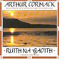

Celtic Lyrics Corner > Artists & Groups > Arthur Cormack > Ruith Na Gaoith > Gad Chuimhneachadh
|  | Gad Chuimhneachadh |
| Credits : | MacDonald; arranged by Arthur Cormack & Blair Douglas |
| Appears On : | Ruith Na Gaoith |
| Language : | Gàidhlig (Scottish Gaelic) |
| Lyrics : | English Translation : |
| Mi 'm shuidh an seo gad' chuimhneachadh | I'm sitting here remembering you |
| A mhaighdeann aoidheil chiùin | Peaceful, pleasant girl |
| Gu bheil mi sgith de'n t-saoghal seo | I'm weary of this world |
| Bho chuir thu rium do chùl | Since you turned your back on me |
| Ged dh'fhalbhainn as an dùthaich seo | And though I'd go forth from this land |
| A null gu tírean cein | To foreign countries |
| Gum bi mo chrídh' ri bualadh | My heart would still beat |
| Airson gruagach a chiul-reidh | For the girl of the smooth tresses |
| Ged dhealaich sinn an dràsda | Although we're parted now |
| Cha b'e d'fhàgail bha 'nam mhiann | Leaving you was not my desire |
| Thug fear eile làmh dhuit | Another man gave you his hand |
| Mu'n do ràinig mis' thu riamh | Before I ever reached you |
| 'S an crídh' tha cruaidh mar iaruinn | And the heart, hard like iron |
| Ged bu mhiann leis bhith ort dlùth | Though it longs to be near you |
| Cha bhrist e chaoidh son bòidhchead | Will never break for beauty's sake |
| Nighneag òg na sùilean ciùin | Young girl of the serene eyes |
| Carson a bhios mi cuimhneachadh | Why do I remember |
| Na h-oidhcheanan a bh'ann | The nights that are gone? |
| A diugh an aobhar chianalais | Today, they are a reason for homesickness |
| Gur iad a liath mo cheann | They have turned my hair gray |
| 'S ged 's toigh leam a bhi smaoineachadh | And though I like to think |
| Gu faodainn bhi ort teann | That I could be close to you |
| Tha h-uile ni cho caochlaideachd | Everything is so changeable |
| 'S an t-saoghail bhochd a th'ann | In this poor world |
| 'S an dùrachd tha mi'n dràsd' toirt duit | And the good wishes I'm sending you now |
| A ribhinn àluinn chiùin | Beautiful, peaceful maiden |
| Gu'm faigh thu fear na's fhearr na mi | Are that you will have a better man |
| A sheinneas àrd do chliù | Who will sing your praises |
| Is cha bhi fios gu bràth agad | And you will never know |
| Gun d'thug mi gràdh dhuit rùin | That I gave my love to you secretly |
| 'S ged bhiodh tu daonnan làimh rium | And though you would always be near me |
| Cha bhi fios aig càch có thu | Others would not know who you were |
| Ach feumaidh mi co-dhùnadh | But I must conclude |
| Chan eil ùin' ann son a chòrr | There is no time for any more |
| Chan eil ann ach faoineas dhomh | It is only foolishness for me |
| Bhi caoineadh son do shéors' | To be mourning your like |
| Ach molaidh mi gu bràth thu | But I will praise you forever |
| 'Son do nàdur blàth gun ghò | For your warm, faultless nature |
| Is nuair thig crioch do làithean | And when your days come to an end |
| Gum bi àite dhuit an glòir | There will be a place for you in heaven |